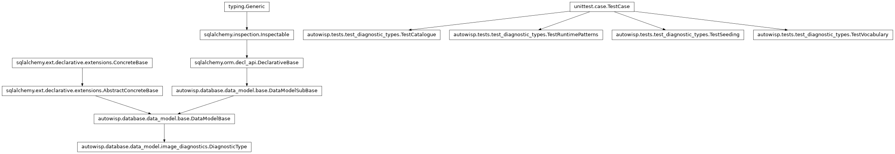
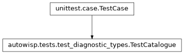
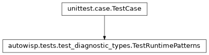
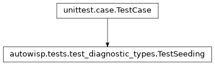
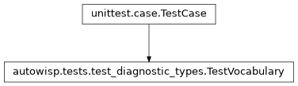

autowisp.tests.test_diagnostic_types module
Class Inheritance Diagram

Tests for the diagnostic vocabulary.
The catalogue was moved out of _init_diagnostic_types() so that an
expression can be validated without opening a project. The risk that
creates is drift: the seeder and the catalogue are now two things that
must agree, where before they were one. TestSeeding is the test
that keeps them honest, and is the reason the rest of this file exists.
- class autowisp.tests.test_diagnostic_types.TestCatalogue(methodName='runTest')[source]
Bases:
TestCase
The shape and content of the static catalogue.
- test_descriptions_are_fully_interpolated()[source]
No description may contain an unexpanded placeholder.
Guards a real defect the extraction fixed: the continuation line of the
*_map_residualdescription was not an f-string, so every one of them was seeded reading “and smoothed {param.upper()} map” literally. A missingfprefix is silent, so only a test of the rendered text catches it coming back.
- class autowisp.tests.test_diagnostic_types.TestRuntimePatterns(methodName='runTest')[source]
Bases:
TestCase
The names that are described rather than listed.
is_quantile_diagnosticis the single definition of what a quantile is called:_save_image_diagnosticsasks it before creating a row, and expression validation asks it before accepting a name. The two used to disagree – a loosestartswith("pixel_q")against an anchored pattern – which is exactly the drift one predicate prevents.
- class autowisp.tests.test_diagnostic_types.TestSeeding(methodName='runTest')[source]
Bases:
TestCase
The catalogue and the rows it seeds must stay identical.
- class autowisp.tests.test_diagnostic_types.TestVocabulary(methodName='runTest')[source]
Bases:
TestCase
What an expression may reference, without opening any project.
- test_catalogue_entries_are_diagnostics()[source]
The seeded names, recorded or not in any particular project.